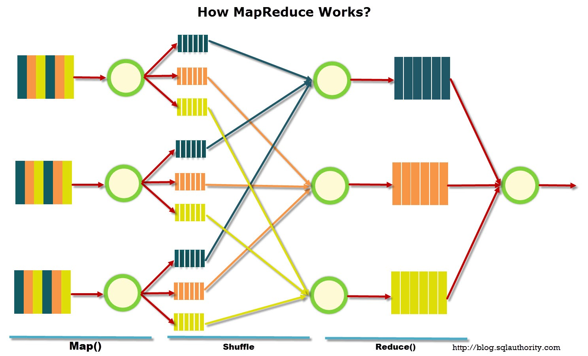
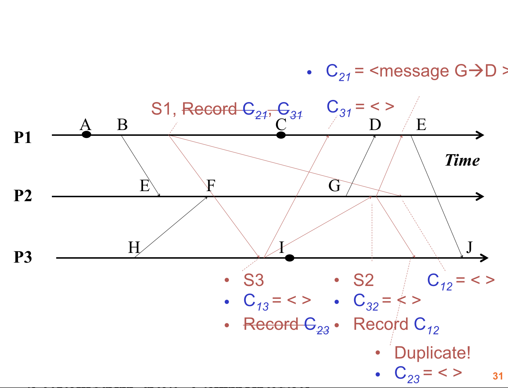
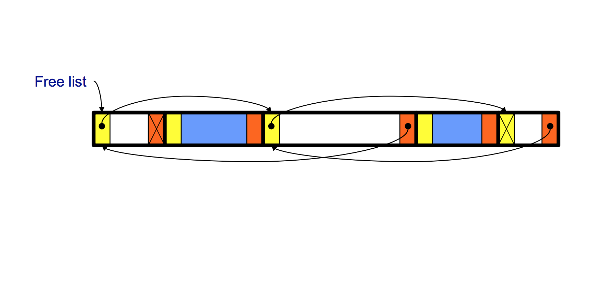
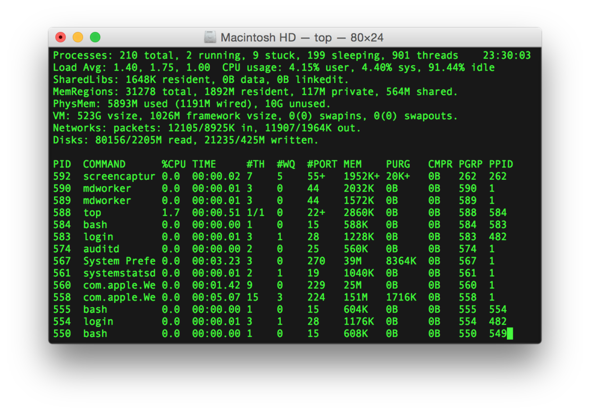
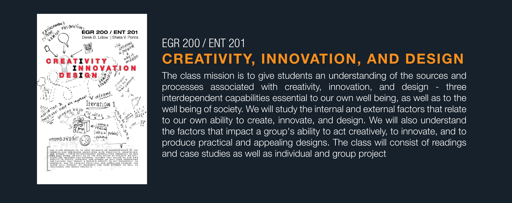
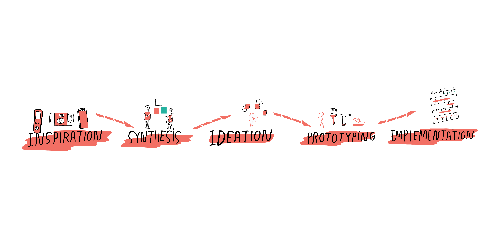

Computer Science Projects
Memclassified

Memcached is a distributed look-aside cache store that aids in servicing client database queries in an efficient manner
by keeping recently queried keys in a quickly retrievable cache. While Memcached is an effective caching store that is used by various big tech companies like Google, Facebook,
Pinterest, etc., can we be even smarter about what we store in the cache in the first place such that the number of roundtrips to the database is minimized? In this project, my partner and I used machine learning to detect unintuitive or non-obvious patterns of data and manage the Memcache appropriately. We wanted to build a predictive relationship between read patterns and future reads
to minimize database lookups and cache evictions. On the minimalist level, our approach was to train a classifier over a set queries to label them as “should be in cache” and “shouldn’t be in cache”. Then, that classifier would work behind the scenes to predict what keys the client will query, would fetch them for database, and would store them in the
Memcached server before the client sends the query to the server. The project details can be found in this Medium article.
MapReduce

MapReduce is a programming model and an associated implementation for processing and generating large data sets. Implemented MapReduce in Go to learn about fault tolerance in distributed systems.
Chandy-Lamport

Chandy–Lamport algorithm is a snapshot algorithm that is used in distributed systems for recording a consistent global
state of an asynchronous system. Implemented the Chandy-Lamport algorithm for distributed snapshots in Go.
Raft

The Raft protocol is used to manage replica servers for services that must continue operation in the face of failure such as server crashes and broken networks. Implemented the Raft
consensus algorithm in Go by first implementing the raft leader election and then coding the log consensus among multiple clients over a distributed system.
AutoComplete

Autocomplete finds all the terms beginning with a given prefix, in descending order by weight. It functions very similar to the search bar on the Google search engine. I implemented the program by sorting the terms by query string, using binary search to find all query strings that start with a given string, and sorting the matching terms by weight.
8puzzle

8puzzle solves a slider puzzle using the A* search algorithm. The puzzle is played on a nxn grid with n2 - 1 square tiles labeled 1 through n2 - 1, plus a blank square. The goal is to rearrange the tiles in row-major order with as few moves as possible. I implemented the program by creating a Board class that models a nxn board, calculates its hamming & manhattan distances, find possible neighboring boards, and determines whether a board is solvable. Then, I implemented the A* searching algorithm to solve the puzzle.
Seam Carving

Seam Carving is an image resizing technique where the image is reduced in size by one pixel at a time. The algorithm finds a seam in the image with the lowest pixel energies so when the seam is removed, the image seems intact. I implemented the algorrithm by fisrst calculating the pixel of each seam, found the vertical seam of minimum total energy, and then removed the seam. To resize the image horizontally, i transposed the picture.
Burrows Wheeler
Burrows Wheeler implements the Burrows-Wheeler data compression algorithm and it outcompresses gzip and PKZIP. The algorithms utilizes three smaller algorithmic components. Burrows-Wheeler transform transforms a typical English text file to a text file in which sequences of same character occur near each other many times. Move-to-Front encoding converts the transfrom file into a text file in which certain characters appear more frequently than others. Finally, Huffman compression compresses the move-to-front file by encoding frquently occuring characters with short codewords and infrequently occuring characters with long codewords.
Heap Manager

Heap Manager implements a heap using a doubly linked list and a hash table combined with a linked list to dynamically allocate memory.
For the doubly linked list, the algorithm first searches the freelist for a big enough chunk. If the chunk of exact desired size is found,
the algorithm removes it from the freelist and uses it. If the chunk is too big, the algorithm removes it, splits it, inserts the
tail end of it back in the free list and uses the front end. If no chunk is found, the heap size is increased and new chunk is created.
The above algorithm is repeated for the hashtable implementation where the size of the chunk is key and the doubly linked lists are the values.
Through this implementation, the algortithm only search the appropriate size bins for big-enough chunk rather than the whole free list. For instance, if one
needs a chunk of size 34 then the algorithm would search the linked lists of sizes 34 and above for a free chunk.
Unix Shell

Unix Shell implements a minimal interactive/realistic Linux shell. The program first creates a lexical analyzer which accepts an
array of characters and returns a Dynamic Array of words where '<' and '>' are special words. Then, a syntactic analyzer accepts the
array of words and creates a command. For instance, "cat < file1" returns "Command name: cat, Command stdin: file1". Finally, the main program
executes the command including cd, setenv, unsetenv, and exit.
The images and text in the section above are edited from the 226 and 217 class pages.
Entrepreneurship Course Work
Instacare: Innovation across Technology, Business, and Marketplaces
My team and I worked the whole semester to build a disruptive technology startup. We created and pitched Instacare. InstaCare aimed to connect underemployed International Medical Graduates (IMGs) who are not certified to medically practice in the United States to uninsured patients through low-cost telemedical consultation services. We provided an online platform that allows uninsured patients to receive affordable primary care consultations from IMGs in order to be more informed about their current medical conditions and actionable steps to take in each medical case. With our platform, uninsured patients would be able to access health services at a drastically reduced cost while underemployed IMGs would earn significantly higher wages. Through the process of building a company, we learned many valuable lessons such as the importance of product-market fit, how to acquire customers, and how to build a financial business model. As a Computer Science major, the class gave me a key understanding on how businesses work outside the technology team.
steppingstone: Foundations of Entrepreneurship
For the first part of the semester, I indivually worked to create and pitch a startup for the midterm supported by
market research. I had numerous ideas but I was very interested in the Income Share Agreement (ISA) education model
and was curious to create more applications of it. As an immigrant, I am also passionate about solving problem that
effect immigrants' lives. I chose the problem of occupational-mismatch and applied the ISA model to it to create a
solution. Every year approximately 700,000 immigrants migrate to the United States many of whom become part of the
gig economy. Despite being highly educated, these immigrants get stuck in low-skilled jobs because they are
unfamiliar with the American job market. My idea was to build an online Income Share Agreement (I.S.A) school for
immigrants, where students go to school for free and are required to pay a percentage of their income after
graduation, but only if they get a job with a good salary. The I.S.A school for immigrants would build upon the
skills immigrants bring from their home countries while also giving them the essential English language skills for
the American job market. My idea got chosen as the top 10 best ideas from the class and for the second half of the
semester I lead a team to develop the idea into a company named steppingstone. The mission of our company,
steppingstone, was to empower immigrants to reach their best potential by closing the
occupational-mismatch gap. We aimed to do that through a 10-week online Income Share Agreement (ISA) school for
immigrants which teaches them ESL while also training them for the American job market. Our high-skilled students go
through the program for free and later pay steppingstone a percentage of their first year’s income upon graduation.
Satoshi Capital: Venture Capital and Finance of Innovation
As a part of the class, we had to structure an investment fund with an investment thesis. My team and I created Satoshi Capital. Our firm, Satoshi Capital, was a 10-year, $70 million seed/Series-A fund focused on blockchain technologies in emerging markets, in particular South/Southeast Asia and Africa. Our team is composed of four general partners, two principals, and five analysts/associates. Two GPs will focus on developing our Africa business, while a GP and a principal-pairing will focus on South Asia and Southeast Asia. We chose to invest in blockchain in emerging markets because we believe 1) South/Southeast Asia and Africa have significant market needs across nearly all industries and 2) blockchain has enormous potential to solve pressing problems in these locations. As an early stage-oriented venture capital firm, our goal was to invest in a lot of start-ups aggressively, while providing them with other resources like technical and market strategy advisors in order to better their chances of success. We further identified a real existing startup which was looking to raise early-stage capital and explained why it was a good investment opportunity for our fund.
Creativity, Innovation, and Design

In this class, my team and I worked on the wicked-problem as to how to reduce sexual misconduct on campus using the process of Design-Thinking. As a part of this process, we conducted various interviews with many students at Princeton to understand the problem before we attempted to solve it. Through the interviews, we gained valuable insights such as that people don't like being asked for conset but want to be asked for consent and the victims we interviewed didn't necessarily want to punish their offender but rather wanted them to get educated & apologize for their actions. Knowing our insights, we first tried to create a system where offender and victims can engage in a conversation which we learned, through prototyping, wasn't a great idea in case an offender retaliates. Then, we tried to create a system where students could annonymously refer offenders or potential offenders to get educated. However, we learned that wansn't completely legal. Finally, we presented a website that provides sample letters for victims on how to reach out to their offender and how to reach out for support. The project was frustrating and exhausting at times but also very rewarding.
Tiger Challenge- United Partnership for Refugees in Sustainable Employment

During the summer after my freshman year, I worked with five other students on Tiger Challenge.
My team and I collaborated to see how can we help refugees find better and more stable jobs in the tri-state area using Design thinking, a human-centered innovation methodology.
My team started by conducting various interviews to gain an understanding of the perspectives and needs of stakeholders involved in the challenge.
Through these interviews and research, we found that some of the main issues that affecting refugees in the employment sector are ESL, cultural differences, transportation, job readiness training, and child care.
For instance, there is an inherent conflict between finding a job and learning English. A refugee has imminent pressure to get an income but in order to get a job you need to know English.
Suppose that a refugee finds a job then they don’t have the means to travel to their job because they don’t have a driver license or a car.
Moreover, in some cultures women haven’t worked before or are not allowed to work. If a refugee woman finds a job then who will take care of the children at the house.
These are some of the many obstacles we learned about. In the next phase of the project, we ideated upon our research to create up to thousand solutions. We finally decided on creating an employer resource for hiring refugees which
we are currently working on.